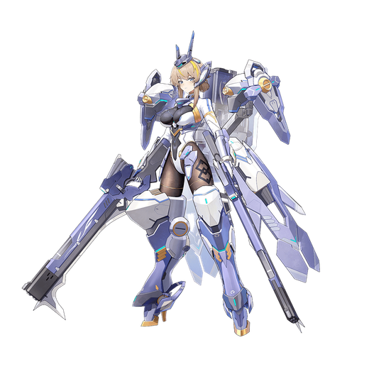

基本データ
- コスト
- 3.0
- 体力
- 未入力
- 赤ロック
- 34
- 動画
- 登録動画

Move Table
| 射撃 | 名称 | 弾数 | 威力 | 備考 |
|---|---|---|---|---|
| メイン射撃 | ガンブレード | 8(10) | 210 | 2連射可能 弾が少し太め |
| サブ射撃 | 無反動砲 | 1 | 226～468 | 髙誘導の実弾3連射 |
| 横サブ射撃 | 無反動砲・移動射撃 | 226～468 | - | レバーNと違いメインキャンセル無し |
| 後サブ射撃 | 無反動砲・反応弾 | 1 | ～673 | 使用後サブ射撃2へ移行 |
| 後サブ射撃2 | 無反動砲・リモート射撃 | 1 | 228 | メインキャンセルで落下可能 |
| サブ格闘 | ガンブレード・斉射 | 1 | ～700 | 極太の照射ビーム |
| 横サブ格闘 | ガンブレード・掃射 | ～507 | - | 回転照射 |
| 後サブ格闘 | 制圧射撃 | 1 | - | Vの字に照射+中央にミサイルをばら撒く |
| 後格闘 | ミサイル発射器 | 1 | - | 2発hitでスタン N/横メ射派生 |
| ガンブレード | 後格→N/横メ射 | - | - | Nの場合は宙返りから5発、追加入力で更に5発 レバー横で横移動しつつビームを5発 |
| 格闘 | 名称 | 入力 | 弾数 | 威力 | 備考 |
|---|---|---|---|---|---|
| メイン格闘 | ガンブレード・格闘 | NNN | - | 552 | 出し切るよりも派生をした方が威力もカット耐性も良い サブ射派生 |
| 無反動砲・追撃 | N→サブ射 | - | - | 603 サブ格派生 | |
| ガンブレード・追撃 | N→サブ格 | - | - | 608～802 | 長押しで威力変動 |
| 横格闘 | ガンブレード・格闘 | 横NNN | - | 548 | N格闘同様出し切るよりも派生をした方が良い サブ射派生 |
| 無反動砲・追撃 | 横→サブ射 | - | - | 585 サブ格派生 | |
| ガンブレード・追撃 | 横→サブ格 | - | - | 590～794 | 長押しで威力変動 |
| 前格闘 | 膝部発射器 | 前 | - | - | 60～414 |
| バーストアタック | 名称 | - | 威力 | ||
| バーストアタック | 私達の力だ！ | - | - | / | |
| 後バーストアタック | 無反動砲・収束反応弾 | - | - | / |